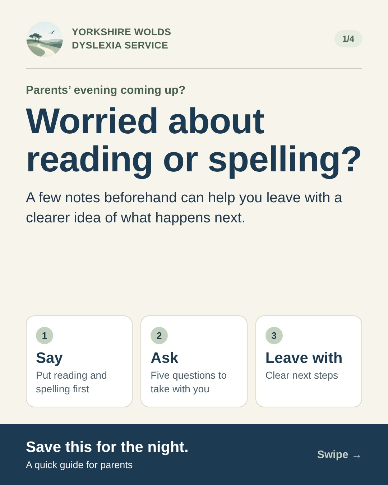
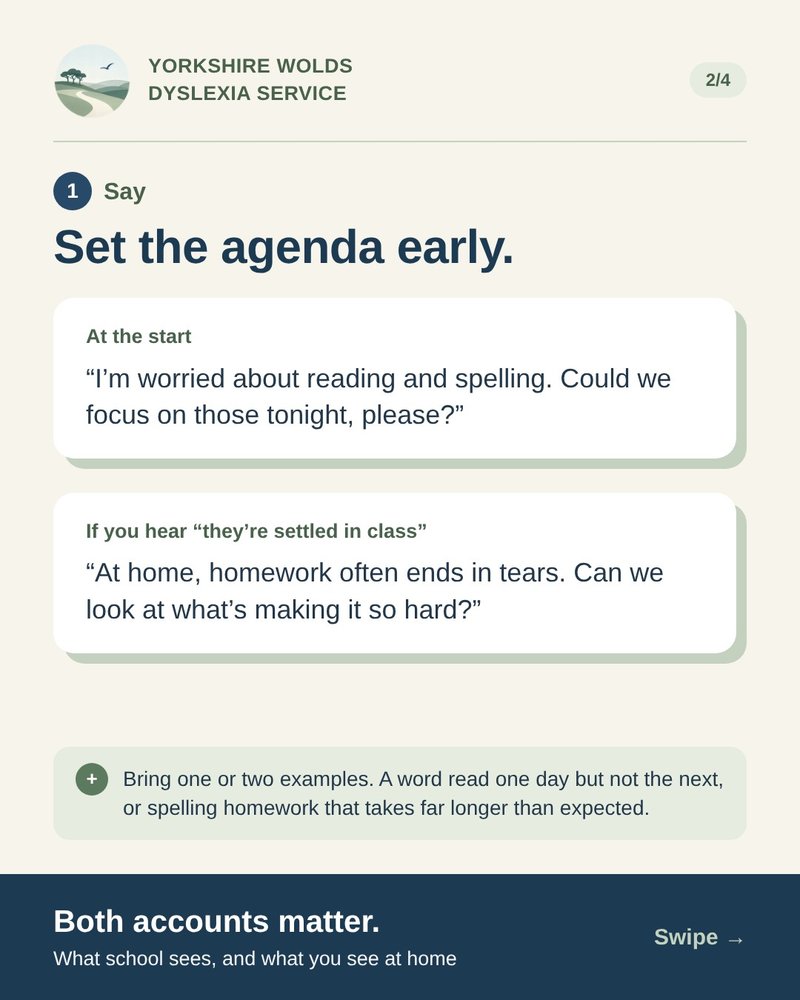
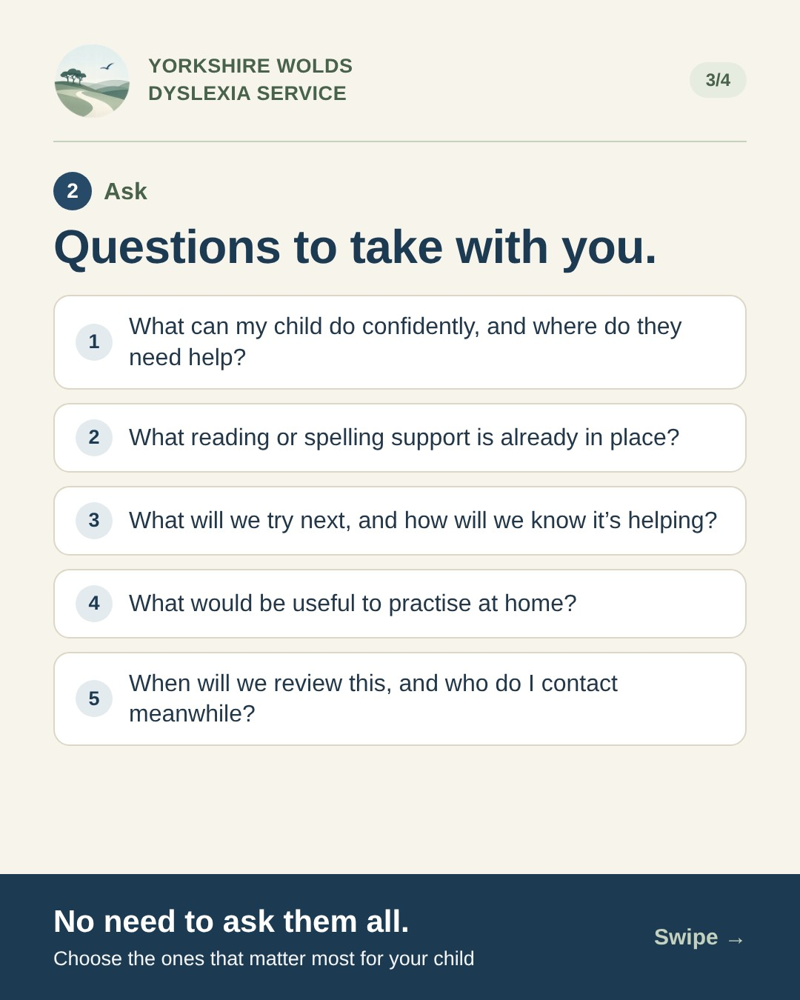
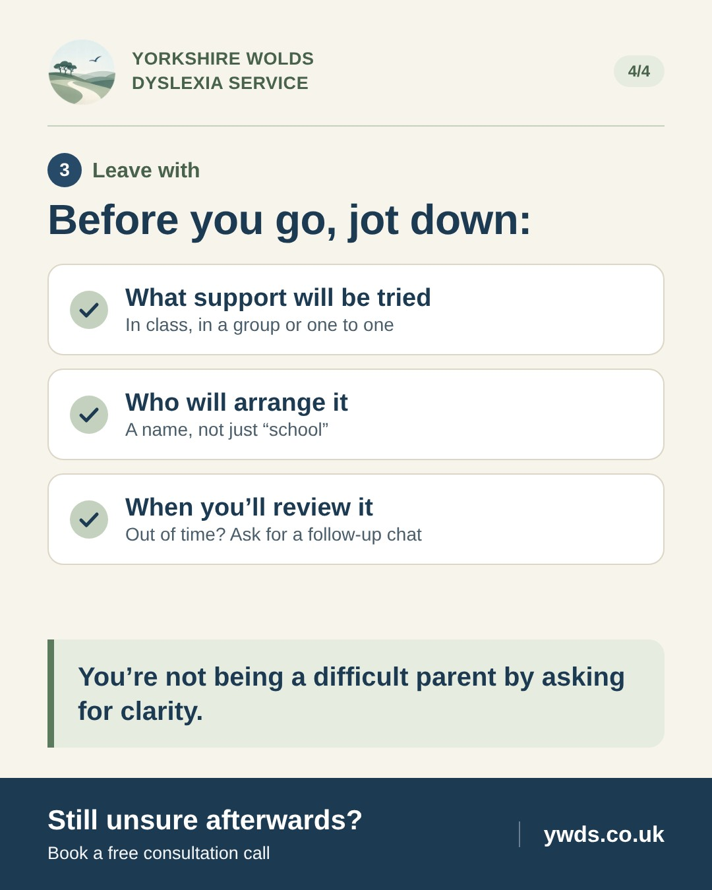
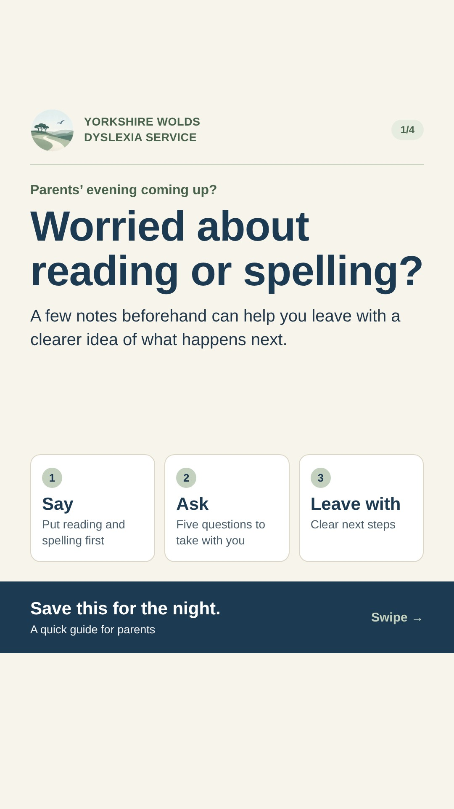
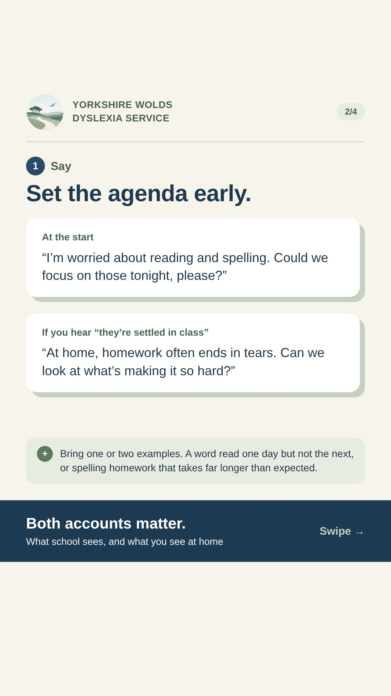
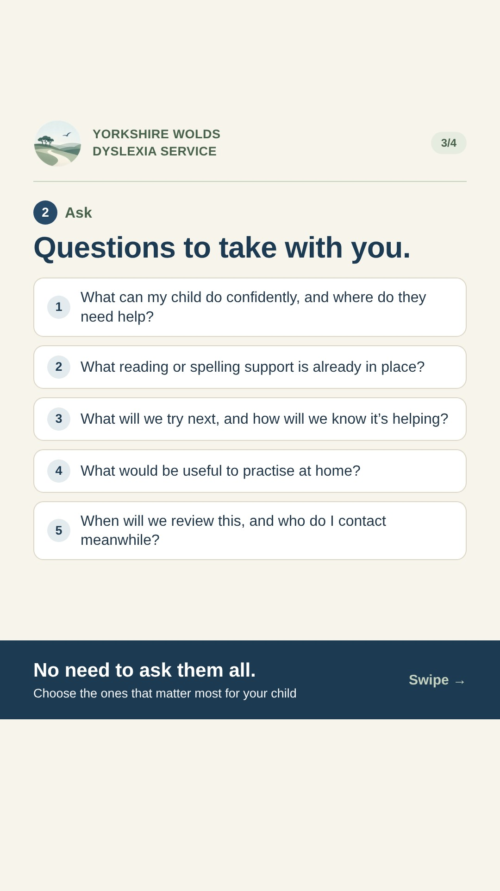
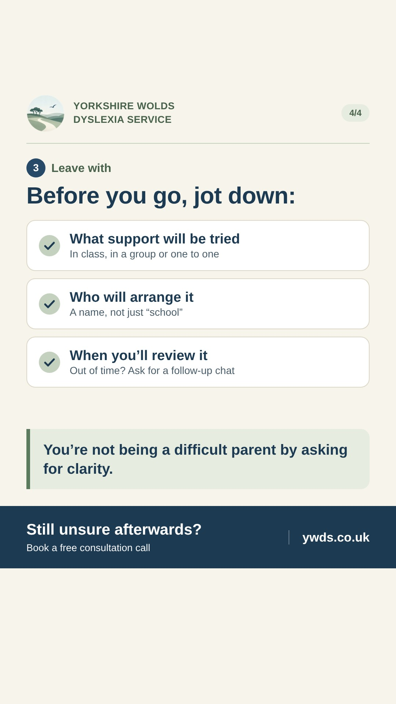

Social media mockup · not live
Parents’ evening carousel
A four-slide carousel for Instagram, Facebook and TikTok. It turns the parents’ evening blog post into something parents can save and take with them: what to say, what to ask, and what to write down before they leave.
Goes outSunday 25 October 2026, 10:00 UK time, all three platforms
Clocks go back that morning10:00 is GMT. Check Metricool’s time zone is Europe/London.
Sizes1080×1350 for Instagram and Facebook, 1080×1920 for TikTok
How it looks on each platform
Use the arrows to move through the slides.
natalieywdsPocklington, East Yorkshire




natalieywds Parents’ evening coming up? 📝
If reading or spelling is on your mind, a few notes beforehand can help you leave with a clearer idea of what happens next. … more
Yorkshire Wolds Dyslexia ServiceSunday at 10:00 · 🌍
Parents’ evening coming up? 📝
If reading or spelling is on your mind, a few notes beforehand can help you leave with a clearer idea of what happens next. See more
TikTok (photo carousel)




Captions
Each platform has its own version. Instagram and TikTok do not make links in captions clickable, so they point to the link in bio and ywds.co.uk. Facebook gets the full link.
Parents’ evening coming up? 📝 If reading or spelling is on your mind, a few notes beforehand can help you leave with a clearer idea of what happens next. Swipe for: 1️⃣ What to say at the start 2️⃣ Five questions to take with you 3️⃣ What to write down before you leave You’re not being a difficult parent by asking for clarity. You’re helping school understand how your child learns and what they find hard. Save this for the night, or send it to a friend with parents’ evening coming up 💙 The full guide, with a short captioned video, is on the blog. Link in bio, or visit ywds.co.uk I offer individual reading and spelling support for families in Pocklington and the surrounding areas. Still unsure afterwards? Book a free consultation call. #ParentsEvening #Dyslexia #DyslexiaAwarenessMonth #DyslexiaSupport #ReadingSupport #SpellingSupport #SENDParents #ParentTips #Pocklington #EastYorkshire #YorkshireWolds
Parents’ evening coming up? 📝 If reading or spelling is on your mind, a few notes beforehand can help you leave with a clearer idea of what happens next. Swipe through for: 1️⃣ What to say at the start 2️⃣ Five questions to take with you 3️⃣ What to write down before you leave You’re not being a difficult parent by asking for clarity. You’re helping school understand how your child learns and what they find hard. Save this for the night, or share it with a friend who has parents’ evening coming up 💙 Read the full guide, with a short captioned video: https://yorkshirewoldsdyslexiaservice.co.uk/blog/parents-evening-reading-and-spelling/ I offer individual reading and spelling support for families in Pocklington and the surrounding areas. Still unsure afterwards? Book a free consultation call at ywds.co.uk #ParentsEvening #Dyslexia #DyslexiaAwarenessMonth #Pocklington
TikTok
Parents’ evening coming up and worried about reading or spelling? 📝 Save this for the night: what to say at the start, five questions to take with you, and what to write down before you leave. Full guide at ywds.co.uk (link in bio) 💙 #ParentsEvening #Dyslexia #DyslexiaAwarenessMonth #ParentTips #SENDParents #Pocklington
Alt text
Paste into each image’s alt text field in Metricool (Instagram and Facebook both support it).
| Slide | Alt text |
|---|---|
| 1 | Parents’ evening coming up? Worried about reading or spelling? A few notes beforehand can help you leave with a clearer idea of what happens next. Three steps: say, ask, leave with. Save this for the night. |
| 2 | Step 1, say: set the agenda early. At the start: “I’m worried about reading and spelling. Could we focus on those tonight, please?” If you hear “they’re settled in class”: “At home, homework often ends in tears. Can we look at what’s making it so hard?” Bring one or two examples. |
| 3 | Step 2, ask: questions to take with you. What can my child do confidently, and where do they need help? What reading or spelling support is already in place? What will we try next, and how will we know it’s helping? What would be useful to practise at home? When will we review this, and who do I contact meanwhile? No need to ask them all. |
| 4 | Step 3, leave with: before you go, jot down what support will be tried, who will arrange it, and when you’ll review it. You’re not being a difficult parent by asking for clarity. Still unsure afterwards? Book a free consultation call at ywds.co.uk. |
Download the slides


Scheduling in Metricool
- Check the brand’s time zone is Europe/London (Settings › Brand). The clocks go back at 02:00 that morning.
- Planning › Create post. Tick Instagram, Facebook and TikTok.
- Upload slides 1 to 4 (the 1080×1350 versions) in order. Set Instagram to a post (carousel), not a story or reel.
- Use “Customise per network” to paste each caption above. For TikTok, swap in the four TikTok images, add the title, and choose photo mode.
- Add the alt text to each image.
- Schedule for Sunday 25 October 2026, 10:00. Check all three appear in the planner at 10:00.
- Before 10:00, set the Instagram and TikTok link in bio to the blog post.